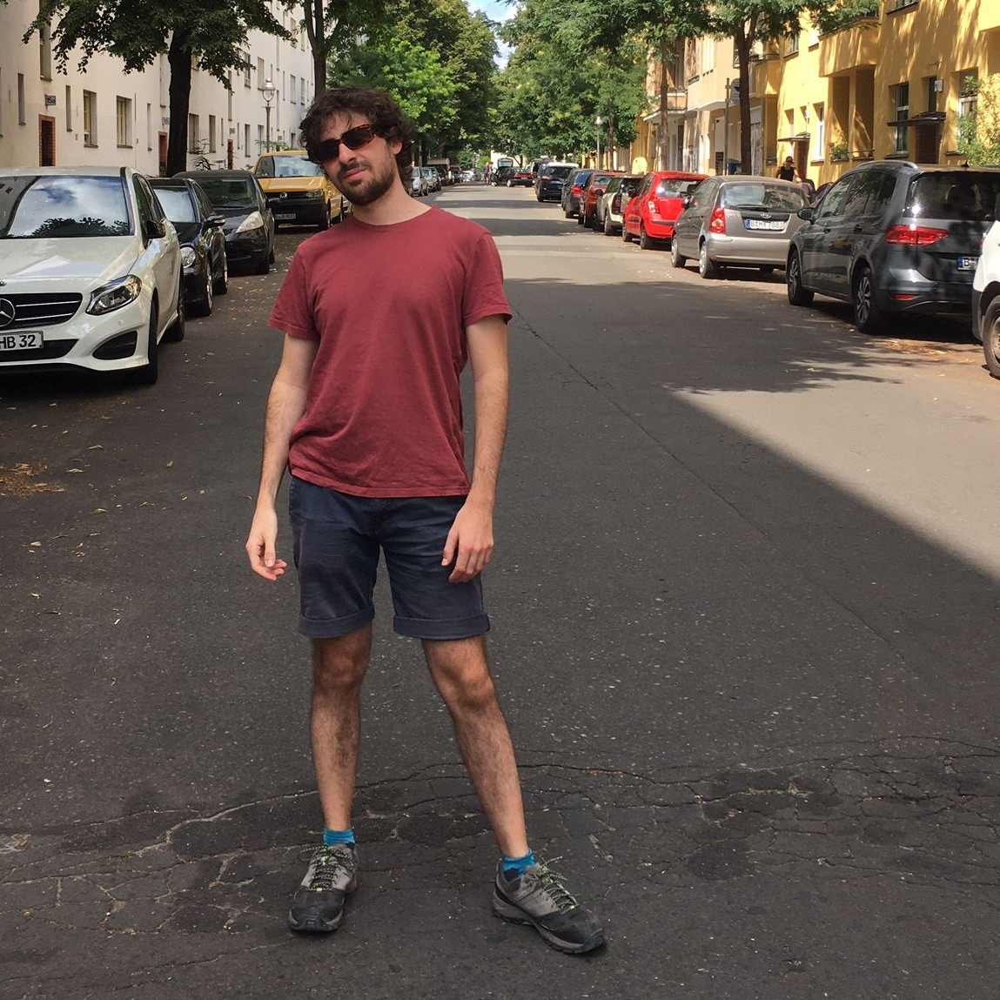

Ciao :)
I'm a PostDoc at Bocconi Institute of Data Science and Analytics (BIDSA) in Milan, Italy. My research investigates the Statistical Mechanics of Disordered Systems and its multidisciplinary applications.
At the moment I'm interested in finding new learning paradigms at the interface between Artificial Intelligence and Biology.
Academic Background
- PostDoc in Physics and Computer Science, Bocconi University, 2024. Supervisor: Carlo Lucibello.
- (Joint) Ph.D. in Theoretical Physics, La Sapienza & Ecole Normale Superieure, 2023. Supervisors: Profs. Giancarlo Ruocco, Francesco Zamponi.
- M.Sc. in Theoretical Physics, La Sapienza, 2020.
- B.Sc. in Physics, La Sapienza, 2018.
Research Interests
- Statistical Mechanics
- Inference and Networks
- Algorithms
- Artificial Intelligence
- Complex Systems
Projects
-
Glassy Physics of Diffusion Models
Bla Bla.
-
Learning & Unlearning in Recurrent Networks
Bla Bla.
Publications
- E. Ventura, S. Cocco, R. Monasson, F. Zamponi (2024). Unlearning regularization for Boltzmann machines. Machine Learning: Science and Technology, 5(2), 025078.
- E. Ventura (2024). [My PhD Thesis] Demolition and Reinforcement of Memories in Spin-Glass-like Neural Networks. arXiv preprint arXiv:2403.02537.
- E. Ventura, M. Benedetti. (2023). Training neural networks with structured noise improves classification and generalization. arXiv preprint arXiv:2302.13417, 6.
- E. Ventura, M. Benedetti, E. Marinari, G. Ruocco, F. Zamponi (2022). Supervised perceptron learning vs unsupervised Hebbian unlearning: Approaching optimal memory retrieval in Hopfield-like networks. The Journal of Chemical Physics, 156(10), 21.
- E. Ventura (2020). [My Master Thesis] Memory Storage and Retrieval in Sparsely Connected Balanced Networks. arXiv preprint arXiv:2305.07656, 71.
To access the articles, visit my Scholar page: Google Scholar.